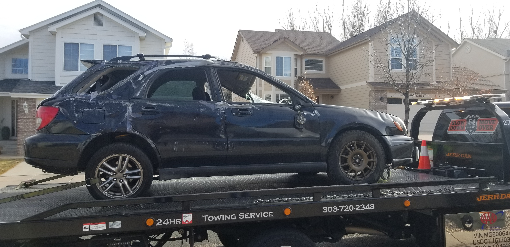
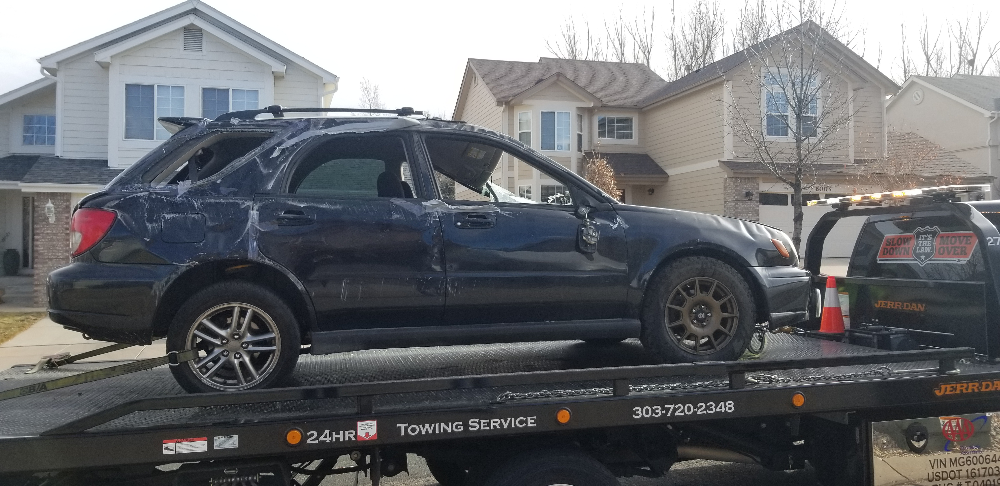
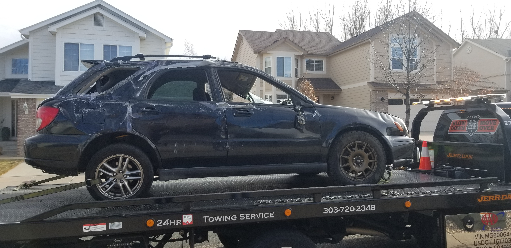
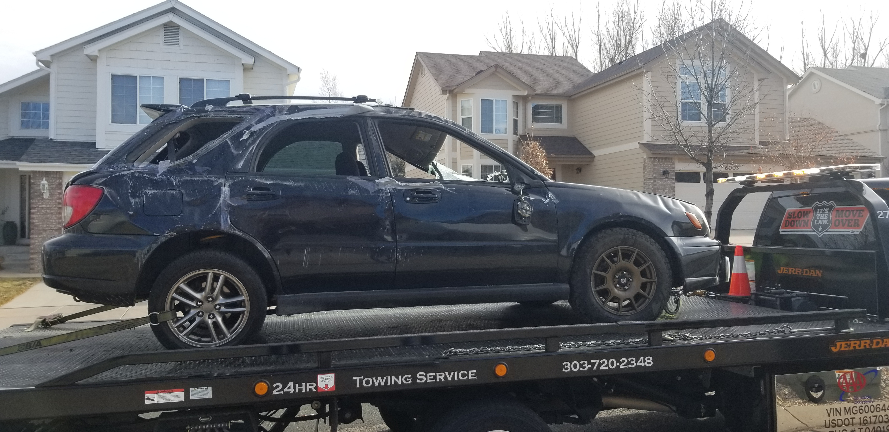
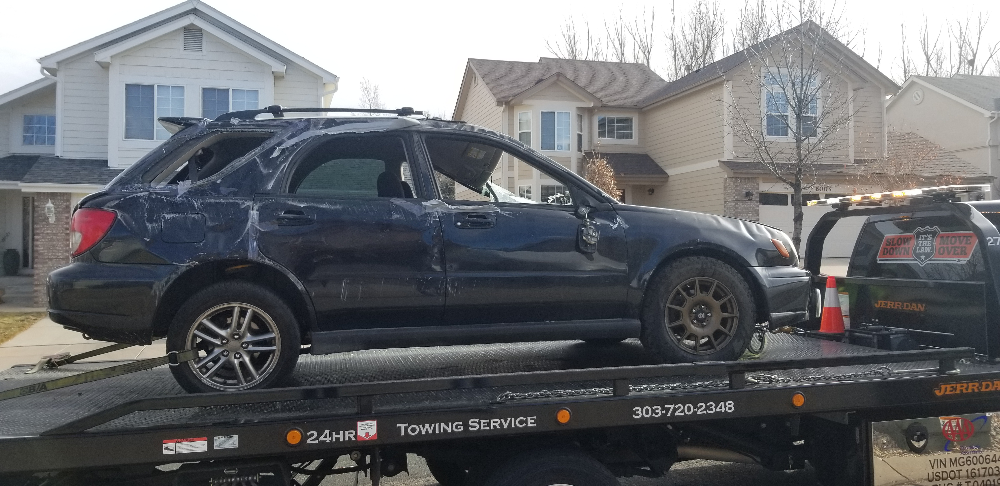

I've been wanting to build a race car for some time. After ample research, I decided I wanted a Toyota MR2 Spyder or a Mazda Miata (whichever was a better deal). That is until I found a 1995 Subaru Impreza for $1000 on craigslist. Depending on who you ask this is the lightest year for the platform and swapping in the more powerful WRX platform is reletively easy.
I have since picked up a wrecked 2003 WRX and I'm currently removing it's components. My plan is to sell anything that's not needed for driving to recoupe some of the cost.
